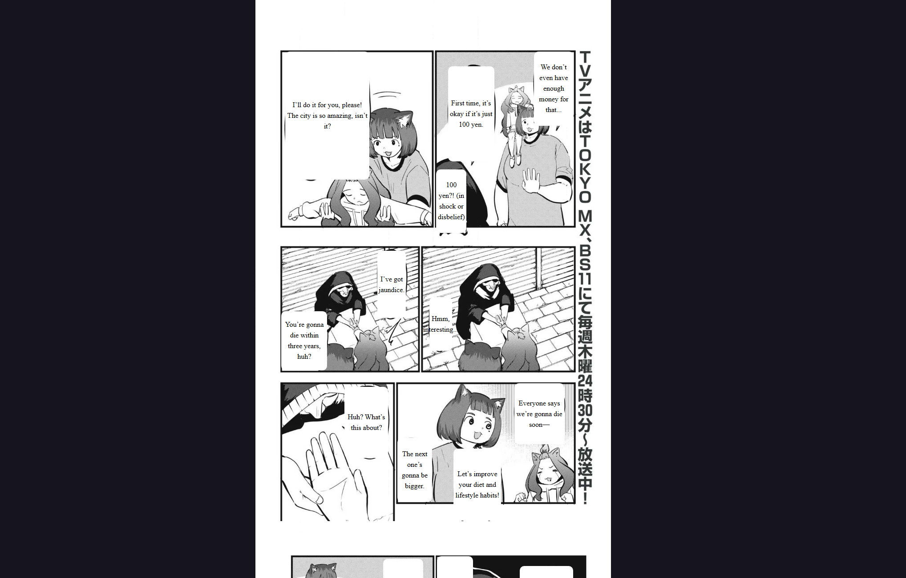
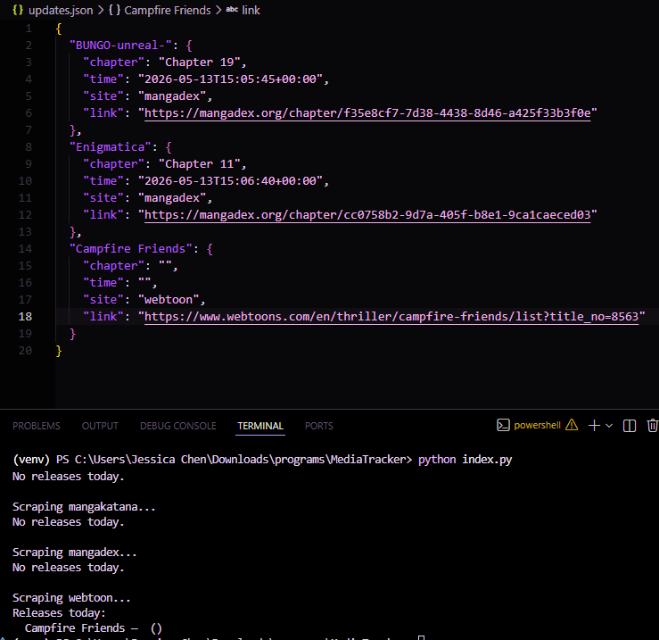

JESSICA CHEN
Hi! I'm Jessica, a recent Computer Science graduate from Hunter College. I have hands-on experience building full-stack applications and creating intuitive, user-focused experiences. I am experienced in developing web applications across the frontend and backend using React, TypeScript, Node.js, Python, and SQL. In my personal and professional projects, I have also explored incorporating machine learning into applications to enrich and improve user experiences.
CONTACT INFO
chenjessicany@gmail.com
(929)363-8020
PROJECTS

Manga Translation Extension
Jun 2026 - Present
Chrome Extension API, Javascript, Python, Hugging Face
Manga Translation Extension is a Chrome extension that automatically translates Japanese manga into English and displays the translations directly on the original panels.
- Architected a Python-based ML pipeline integrating Hugging Face models for Japanese text detection, OCR, and machine translation, enabling automated English translations of manga panels.
- Built benchmarks and tests to profile pipeline performance, using latency measurements to iteratively experiment with and optimize the system architecture for improved throughput.
- Integrated a FastAPI backend with a Chrome extension to overlay translations directly onto manga pages while preserving the original layout.

Manglify
Feb 2026 - May 2026
React Native + Expo, FastAPI, Supabase, Hugging Face
Manglify is an AI-powered manga reader that translates Japanese manga using OCR and machine translation. Users can browse manga, receive AI-generated translations, and read translated pages through a modern React Native interface.
- Designed UI wireframes to establish application layouts and user flows.
- Refactored the frontend into reusable components, improving code maintainability and reducing duplication.
- Developed responsive interfaces that adapt seamlessly across mobile and desktop screen sizes.

MediaTracker
Apr 2026
Python, CloudScraper, BeautifulSoup
MediaTracker automates content tracking across multiple websites by scraping sources, detecting new releases, and extracting relevant information.
- Built a Python-based media tracker that scrapes release data from multiple manga/webtoon sources and consolidates updates into JSON, including chapter numbers, release timestamps, and direct links to newly released chapters.
- Implemented a flexible data extraction pipeline supporting both HTML scraping and API integration across sources such as Webtoon and MangaDex.
- Configured per-site selectors in a JSON file, so the same scraping function can handle different site layouts by reading container/card/title/chapter/time/link rules from JSON.

Socialite
Oct 2025 - Nov 2025
React + Typescript, ExpressJS, PostgreSQL, Firebase
Built a full-stack calendar scheduling web app using React/Next.js and Express, allowing students to create, manage and view events through a centralized platform.
- Collaborated in an Agile development team using CI/CD and release workflows by setting up GitHub Action pipelines and automated testing with Jest across frontend and backend.
- Implemented
- Engineered a Python ML model using scikit-learn to analyze patterns in user event history and predict optimal scheduling times, automating event creation and significantly enhancing user experience by reducing manual input.

Memo
Oct 2025 - Nov 2025
React, Express.js, MongoDB, Hugging Face
Developed a full-stack digital journaling web application designed to help users track daily emotions and reflect on their experiences through an interactive calendar interface for creating, editing, and organizing journal entries.
- Integrated Hugging Face emotion analysis into the journaling workflow, automatically classifying journal entries by sentiment and enriching the experience with emotion-based insights.
- Designed a React/Vite frontend with interactive calendar navigation, recent-entry summaries, and draggable stickers, improving engagement and visual personalization of journal entries.
- Led backend development by designing normalized SQL schemas for calendar and event entities, building REST APIs in Express, and implementing secure authentication using JWT and bcrypt.

Stellar Search
Oct 2025 - Nov 2025
React, Python, Supabase, Gemini API
Stellar Search goes beyond standard keyword-based filtering used by Slack and Discord, allowing users to search for message history through context clustering.
- Designed and implemented a database schema for storing user accounts and clustered message data.
- Integrated authentication and data collection workflows for Slack and Discord so the system can work with real workspace data.
- Deployed the backend and established CI/CD workflows to automate testing and application delivery.

FaceOff
May 2025
Python, PyTorch, OpenCV, Matplotlib, torchvision, NumPy, Pillow
FaceOff is a PyTorch-based Siamese neural network using triplet loss to improve facial recognition feature consistency across altered and unaltered faces with makeup
- Designed and trained a Siamese neural network in PyTorch using triplet loss to learn feature embeddings that preserve identity across make-up related appearance changes.
- Evaluated model performance using validation metrics such as accuracy, precision, and threshold optimization.
- Achieved 91.67% accuracy on facial recognition across 100+ faces with and without makeup.

Wanderer
Feb 2024
React, Firebase, Google Maps API
Wanderer is a platform that allows users to discover and post events easily, solving the problem of finding local events or posting their own.
- Collaborated with a four-person team to design and deliver a functional prototype within a two-day hackathon.
- Designed and implemented responsive UI components with React.